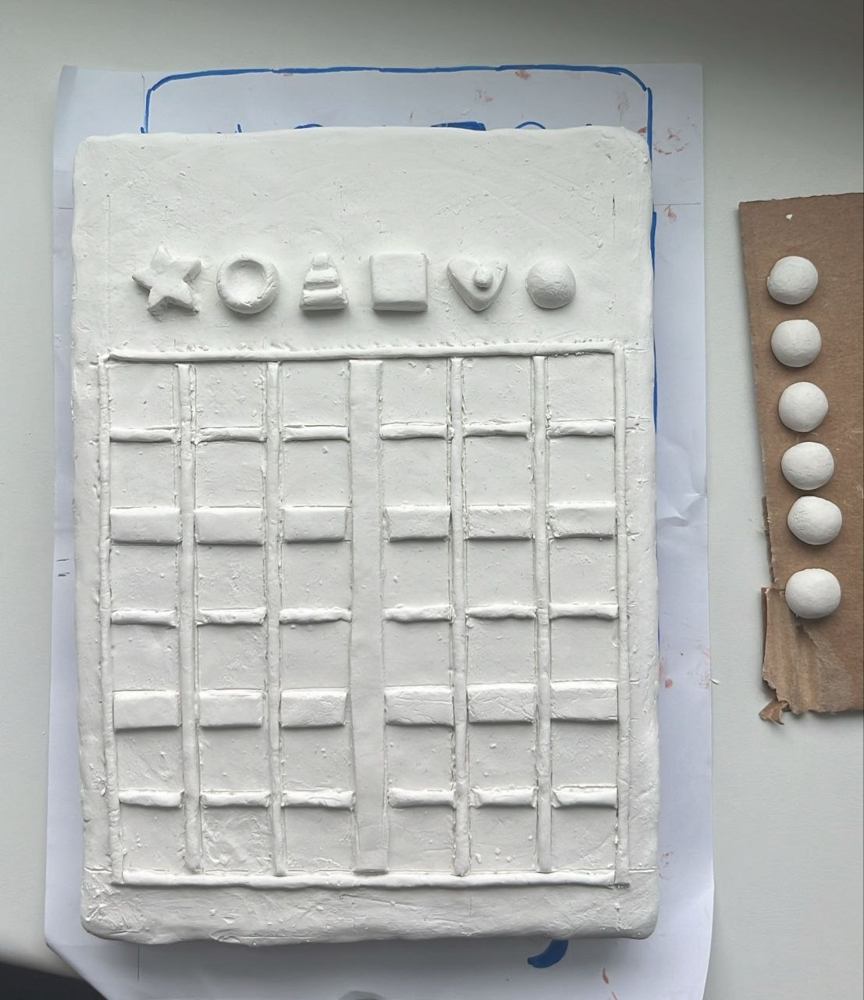
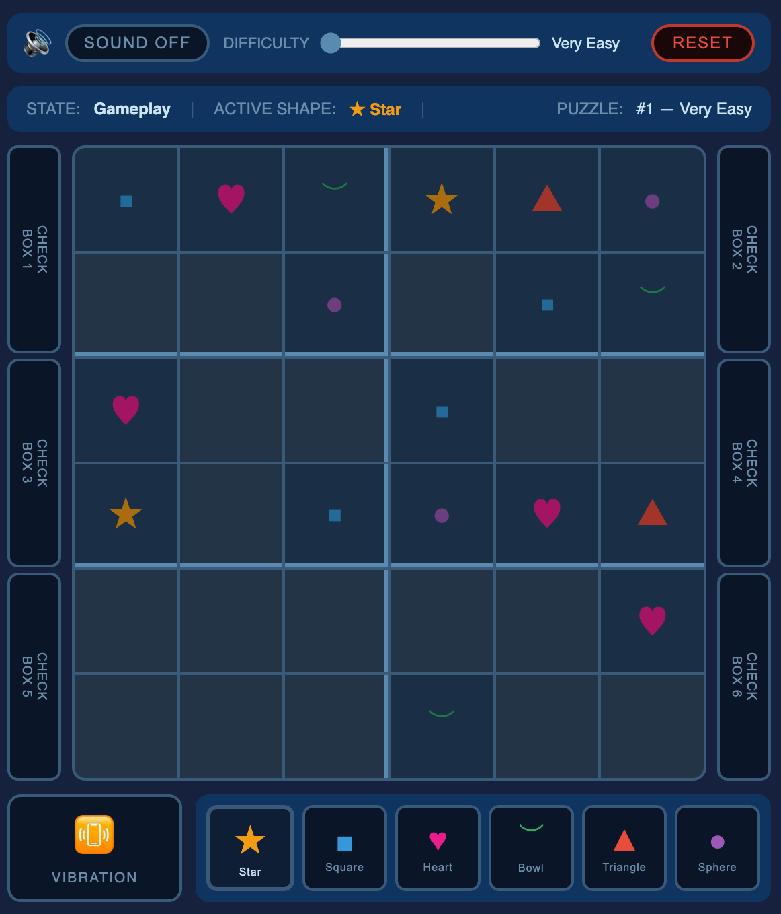
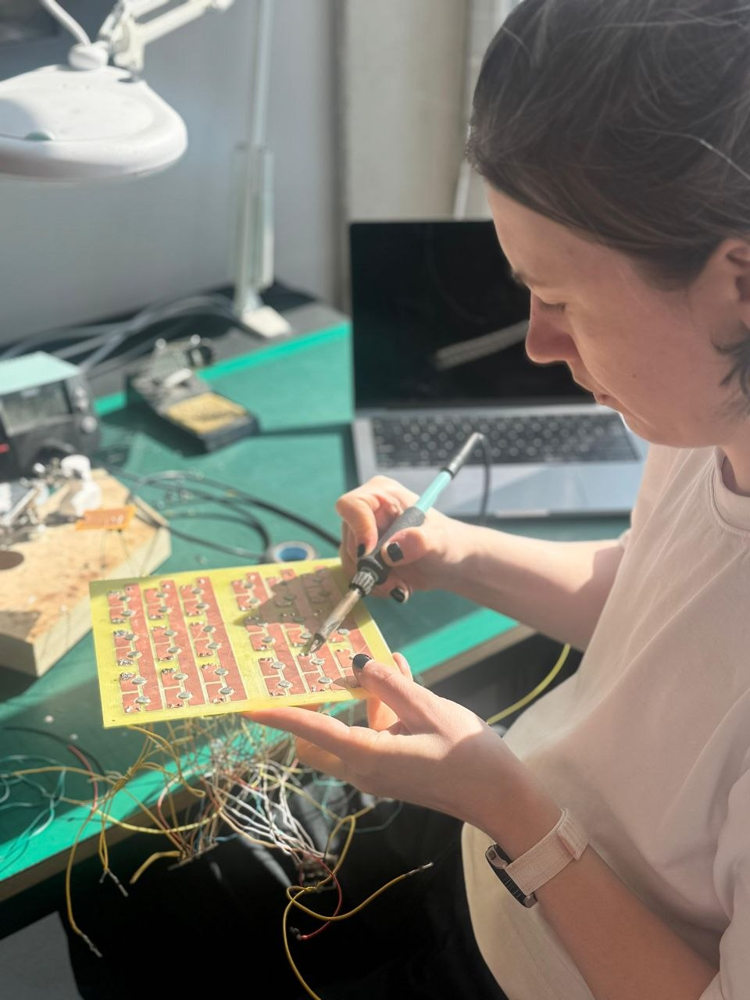
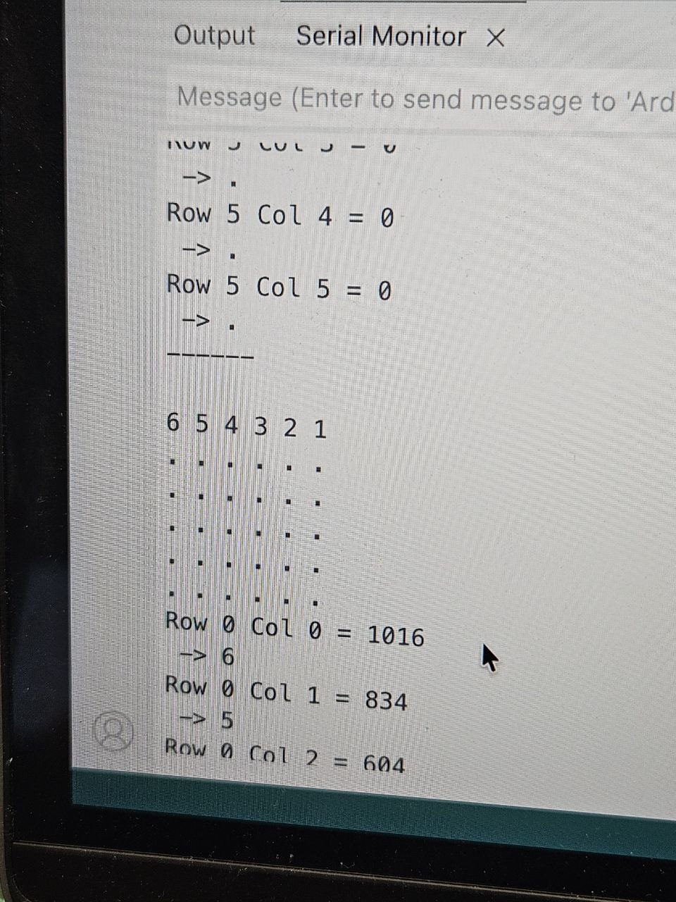

Tactile Sudoku
03
Exploring how touch, contrast, and clear structure can make puzzles easier to navigate — especially when vision isn’t the primary sense.
CONTEXT
Sudoku is a popular puzzle game, but traditionally relies on your vision to solve it. Tactile adaptations exist, but are still thin on flexibility and feedback; screen readers or a helper change the quiet, solitary rhythm that makes the game what it is.
GOAL
Our goal was to rebuild the puzzle for touch, so the game can be played without vision.

Tactile intent
A physical 6×6 board players with low vision can enjoy on their own.
Six shapes, each with its own texture, replace numbers. Textured navigation buttons help track position on the grid. Vibration confirms placements and flags issues; optional sound gives an extra solving clue.
KEY IDEA
Accessible Sudoku rebuilt for touch, where tactile play deepens its calm, grounding feel.
More about the process
Prototyping
Fast iteration before PCB and sensing.
Air-dry clay + a simple grid to test:
- whether six shapes were distinguishable
- whether the layout felt playable by touch
The pawns evolved through multiple passes:
- texture mattered as much as shape
- size affected how quickly pieces could be recognized


Online simulation
A lightweight browser simulation to check rules and feedback away from hardware.
Ran alongside the physical prototype so logic could evolve without waiting on the board.
Fabrication
A copper-clad fibreglass field — traces, contacts, and magnets in mind.
Soldered copper paths meet the pawns at each cell; magnets seat pieces firmly.
Bench work — prep, soldering, sanding — closed the gap between layout and sensing.


Electronics
A resistor in each pawn; firmware reads them as six distinct “digits.”
- Calibrate ranges so adjacent values don’t bleed together.
- Tame electrical bleed between rows and columns.
- Stress-test placement, lift, and re-seat for trustworthy reads.